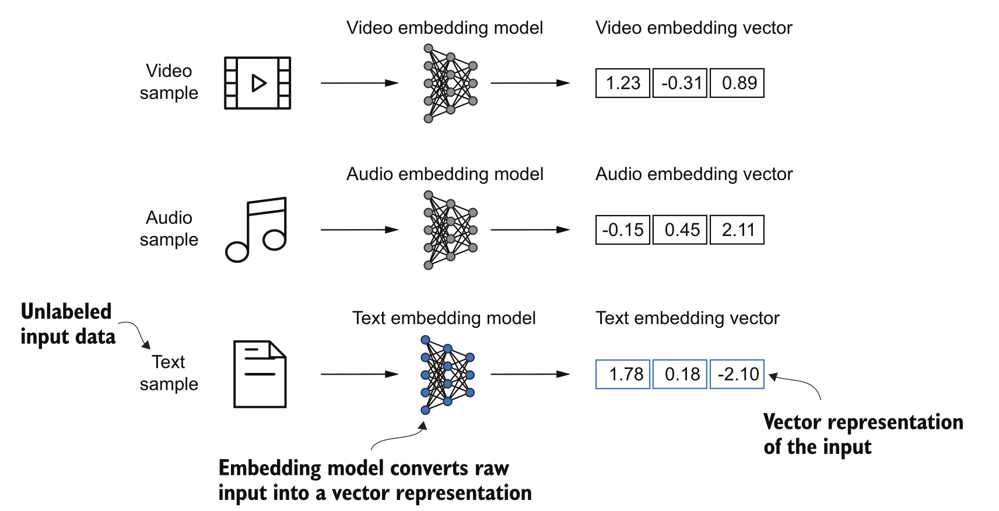

Large Language Models: A Hands on Approach
Tokenization
Topics Covered
- Preprocessing text data for LLMs
- Tokenization techniques
- Byte Pair Encoding (BPE)
- Converting tokens into vectors
Models of the Week
TranslateGemma
- SOTA Open weights multilingual translation model
- Multimodal capabilities: text + images for context
- 4B, 12B and 27B versions
MedGemma
- SOTA Open weights medical imaging and document understanding model
- CT/MRI/Histopathology Processing, Medical Document Understanding, Multi-domain Classification
GLM-4.7-Flash
- Coding, Tool use and Reasoning abilities
- 30B-A3B MoE model
Motivation
Why does tokenization matter?
- Cost: Billing is per token, not per word
- Context limits: Tokenization decides what fits vs what gets truncated
- Reasoning failures: Try "Say Nameeee" vs "Say Name eee" in DeepSeek
- Multilingual bias: Some languages need more tokens for same meaning
Data Preprocessing Pipeline
- Cannot feed raw text directly into LLMs.
- Need numerical representations.

graph LR
A[Raw Text] --> B[Tokenization]
B --> C[Token IDs]
C --> D[Embedding Layer]
D --> E[Input Embeddings]
E --> F[LLM]The Full Pipeline
Unified Architecture

What Is Tokenization?
Tokenization breaks text into smaller units called tokens.
Tokens can be words, subwords, or characters.
Example: "The transformer architecture is revolutionary."
| Approach | Tokens | Count |
|---|---|---|
| Words | ["The", "transformer", "architecture", "is", "revolutionary", "."] |
6 |
| Characters | ["T", "h", "e", " ", "t", "r", "a", ...] |
45 |
| Subwords | ["The", " transform", "er", " architecture", " is", " revolution", "ary", "."] |
8 |
Real World Example: GPT-2 Tokenizer

Tokenization Pipeline

Tokenization Spectrum
Bytes → Characters → Subwords → Words
↑ ↑
256 tokens Millions of tokens
Long sequences Short sequences
Trade-off between vocabulary size and sequence length.
Word-Level Tokenization
Split text into words based on spaces and punctuation.
import re
text = "Hello, world. This, is a test."
result = re.split(r'(\s)', text)
# ['Hello,', ' ', 'world.', ' ', 'This,', ' ', 'is', ' ', 'a', ' ', 'test.']

Word-Level: Pros and Cons
Advantages:
- Short sequences (one token per word)
- Linguistically intuitive
- Fast attention (fewer tokens)
Disadvantages:
- Huge vocabulary (English needs 100K+ words)
- OOV problem: Unknown words →
[UNK] - Morphological blindness: "run", "runs", "running" are unrelated
- Language-specific: Some languages don't use spaces
Character-Level Tokenization
Split text into individual characters.
Advantages:
- No OOV tokens (any text can be encoded)
- Tiny vocabulary (~100-300 tokens)
- Handles typos and neologisms
Disadvantages:
- Very long sequences (5-10x longer)
- Slow attention (more tokens)
- Poor semantics (characters lack meaning)
- Harder to learn word structure
Subword Tokenization
The sweet spot: split rare words, keep common words whole.
| Word | Subword Tokens | Interpretation |
|---|---|---|
| the | ["the"] |
Common → single token |
| transformer | ["trans", "former"] |
Split into known pieces |
| unhappiness | ["un", "happi", "ness"] |
Morphemes preserved |
| GPT-4 | ["G", "PT", "-", "4"] |
Unknown → character fallback |
Popular Subword Algorithms
- Byte Pair Encoding (BPE) - Frequency-based merging
- WordPiece - Probability-based merging (BERT)
- SentencePiece - Unigram language model (LLaMA)
Byte Pair Encoding (BPE)
Sennrich et al. (2016)
Core idea: Iteratively merge the most frequent pair of tokens.
- Start with vocabulary of individual characters (or bytes)
- Count all adjacent pairs in the corpus
- Merge the most frequent pair into a new token
- Repeat until reaching desired vocabulary size
BPE Walkthrough
Input: "low lower lowest"
Step 1 - Initialize tokens:
['l', 'o', 'w', ' ', 'l', 'o', 'w', 'e', 'r', ' ', 'l', 'o', 'w', 'e', 's', 't']
Step 2 - Count pairs:
('l', 'o'): 3 ('o', 'w'): 3 ('w', ' '): 3
(' ', 'l'): 2 ('e', 'r'): 1 ('e', 's'): 1
BPE Walkthrough (continued)
Step 3 - Merge most frequent pair ('l', 'o') → 'lo'
['lo', 'w', ' ', 'lo', 'w', 'e', 'r', ' ', 'lo', 'w', 'e', 's', 't']
Step 4 - Count pairs again:
('lo', 'w'): 3 ('w', ' '): 3 (' ', 'lo'): 2
Step 5 - Merge ('lo', 'w') → 'low'
['low', ' ', 'low', 'e', 'r', ' ', 'low', 'e', 's', 't']
BPE Result
Final tokenization:
"low lower lowest" → ["low", " ", "low", "er", " ", "low", "est"]
Can encode any word:
"lowestness" → ["low", "est", "ness"]

BPE: Pros and Cons
Advantages:
- Balances vocabulary size and sequence length
- Handles OOV words by breaking into subwords
- Captures morphological structure
Disadvantages:
- Greedy algorithm (may not find optimal tokenization)
- Training corpus dependent
Byte-Level BPE (GPT-2 Style)
GPT-2 uses byte-level BPE:
- Start with 256 byte tokens (not Unicode characters)
- All text is UTF-8 encoded first
- Merges operate on bytes, not characters
- Avoids merges beyond word boundaries
Advantages:
- Handles any language without special tokenization
- Works with emojis, rare scripts, binary data
- No
[UNK]tokens ever needed
Multimodal Tokenization
Modern models tokenize more than text:
- Text: Subword tokenization (BPE, WordPiece)
- Images: Patch-based (e.g., ViT) - split into 16x16 patches
- Video: Frame + patch tokenization
- Audio: Spectrogram frames
graph LR
T[Text Input] --> TT[Text Tokenizer]
I[Image Input] --> IT[Image Tokenizer]
A[Audio Input] --> AT[Audio Tokenizer]
V[Video Input] --> VT[Video Tokenizer]
TT --> U[Unified Token Sequence]
IT --> U
AT --> U
VT --> U
U --> M[Transformer Model]Vocabulary Size Trade-offs
Smaller Vocabulary:
- Faster training and inference
- Lower memory usage
- Longer sequences
Larger Vocabulary:
- Shorter sequences
- Better semantic representation
- Higher memory usage
Vocabulary Impact on Parameters
$ \text{Embedding Matrix} = V \times E $
$ \text{Output Layer} = H \times V $
Where $V$ = vocabulary size, $E$ = embedding dimension, $H$ = hidden dimension
Model Vocabulary Comparison
| Model | Vocabulary Size | Tokenizer |
|---|---|---|
| GPT-2 | 50,257 | BPE |
| GPT-4 | ~100,000 | BPE variant |
| BERT | 30,522 | WordPiece |
| LLaMA | 32,000 | SentencePiece |
| Claude | ~100,000 | BPE variant |
References
- Let's Build the GPT Tokenizer - Andrej Karpathy
- The Smol Training Playbook
- Neural Machine Translation of Rare Words with Subword Units - Sennrich et al., 2016
Thank You
Questions?